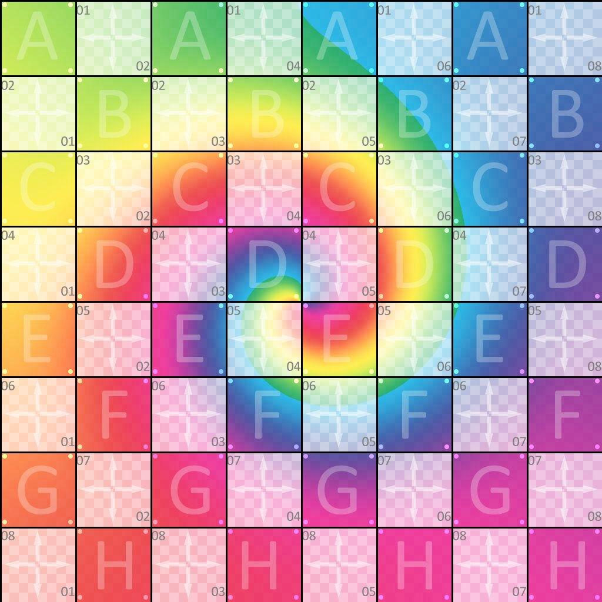

3D Graphics

The Procedural Geometric Modeling project focuses on the mathematical generation of 3D primitive geometries from scratch. Instead of loading external 3D model assets, this project utilizes pure procedural code to compute vertex attributes (positions, surface normals, and UV coordinates) and define structural topology via index buffers. The primary objective was to understand the underlying graphics pipeline pipeline mechanics and mathematical representations of basic 3D shapes, providing a reliable geometric foundation for modern real-time rendering systems.
build_index_buffer() infrastructure to generate efficient triangle-fan and triangle-strip arrangements across dynamic grid dimensions.std::span, and custom OpenGL modern wrappers (GL:: API) avoiding deprecated fixed-function calls.convert_to_lines_pattern) to support simultaneous solid texturing, wireframe toggles, and surface normal line rendering in real-time.ProceduralMeshes subsystem into the core engine factory pipeline and configured dual-target compilation architectures for Windows x64 and Native WebAssembly (WASM/Emscripten).
This assignment heavily reinforced how 3D topologies are managed in modern GPU buffers. A significant technical challenge arose during integration testing under GCC and Emscripten Web environments.
The compiler enforced strict strict promotion checks, resulting in -Werror=double-promotion failures due to automatic mathematical upscaling between literal double values and standard float datatypes within the application logic.
To prevent execution stalls, I standardized mathematical variables using explicit constexpr float configurations.
However, this subsequently triggered secondary -Werror=useless-cast warnings where historical static_cast<float> markers became redundant.
By entirely cleaning up the type-casting chains and isolating strict 3D float bounds, I successfully reduced compilation warnings to zero, securing stable cross-platform performance between desktop native rendering and real-time WebGL.